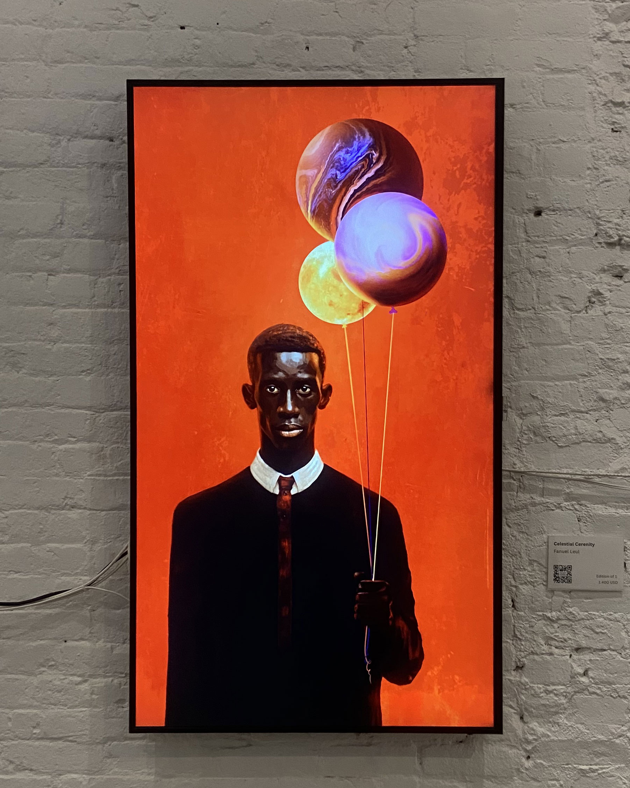

Longing for
the Unknown
 88 Clinton St
88 Clinton St

It explores the indescribable feeling of discovering one's true home. It delves deep into the mystifying connection between the soul and a place that seems to exist beyond physical existence, yet feels more real than anything else.